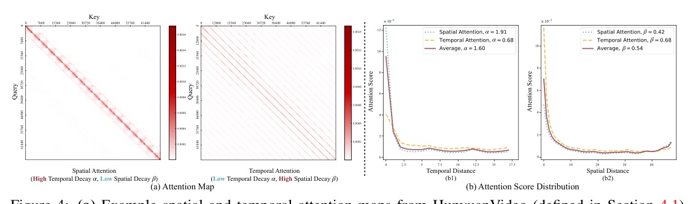
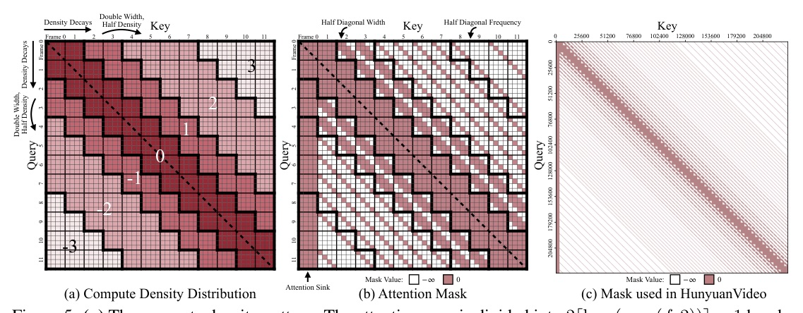
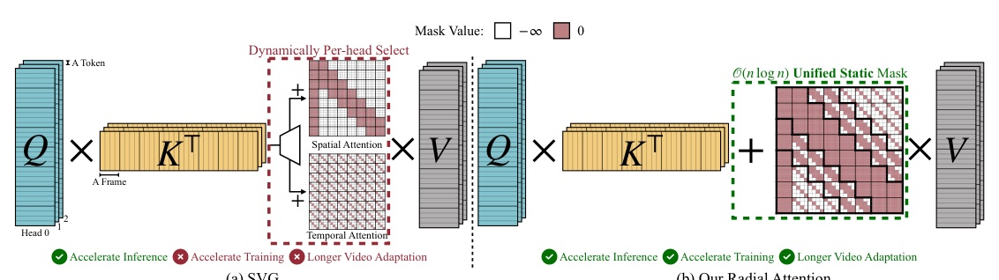
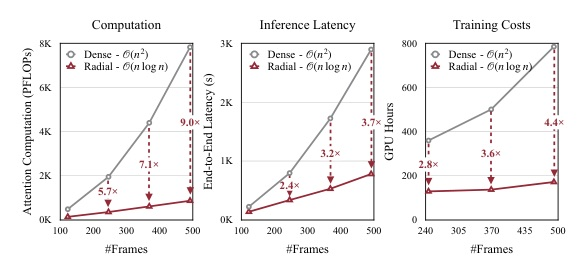
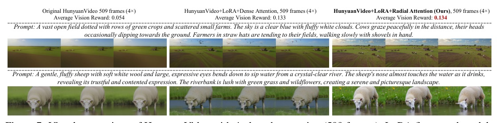

把 video diffusion 裡的 spatiotemporal energy decay 轉成 static sparse mask: 4x 長影片仍保品質, attention compute 降到 O(n log n).
Dense attention 不一定要全刪；真正該做的是讓 compute density 跟 attention energy 一起衰減。
Radial Attention 保留近距離 spatiotemporal relations, 對遠距 frame 逐層降密度；結果是 O(n log n) attention, 不是 O(n) 線性替換的品質折衷。
Dynamic / generic sparse
Radial Attention

Radial 的直覺：近處保真、遠處保覆蓋；不是全局平均稀疏。
如果 attention energy 隨距離衰減，那 compute 也該以距離衰減。中央 band 保 full density，外圈 band 越遠越稀；這讓 mask 同時有 local fidelity 和 long-range coverage。


Why dense FT hurts
Radial + LoRA
| Model | Params | Default output | Long eval |
|---|---|---|---|
| Mochi 1 | 10B | 480p / 162 frames | 331 and 667 frames |
| HunyuanVideo | 13B | 720p / 125 frames | 253 and 509 frames |
| Wan2.1-14B | 14B | 720p / 81 frames | 161 frames |
| Setting | Method | PSNR | LPIPS | Latency | Speedup |
|---|---|---|---|---|---|
| Hunyuan 117f | Dense original | - | - | 1649s | - |
| Hunyuan 117f | Radial (ours) | 27.3 | 0.114 | 876s | 1.88x |
| Wan2.1 69f | Dense original | - | - | 1630s | - |
| Wan2.1 69f | Radial (ours) | 23.9 | 0.163 | 917s | 1.77x |
| Setting | Ours train | Dense train | Ours infer | Dense infer | Vision Reward |
|---|---|---|---|---|---|
| Hunyuan 509f | 21.4h | 93.6h | 781s | 2895s | 0.134 |
| Mochi 667f | 17.4h | 49.2h | 386s | 992s | 0.113 |
| Wan2.1 161f | 14.5h | 28.0h | 2847s | 5735s | 0.145 |

Radial 的勝點是「物理式 locality prior」剛好對上 video DiT 的 attention distribution。
Generic sparse attention 也能省 compute，但如果 sparse pattern 跟 pretrained attention 不對齊，fine-tuning 會先花力氣修 mismatch。Radial 直接用 observed decay 做 mask，所以 LoRA 能把容量留給 temporal coherence 和 fidelity。
Decay fit
Attention MSE

"post-softmax attention scores diminish as spatial and temporal distance between tokens increase"
post-softmax attention score 會隨空間與時間距離變遠而降低，這是整篇把物理式 energy decay 轉成 sparse mask 的根據。Abstract p.1 lines 52-58
"each token attends to others at similar spatial locations, while the attention window shrinks exponentially with temporal distance"
每個 token 仍看相近空間位置，但時間越遠 attention window 指數縮小。Introduction p.2 lines 167-170
"with our proposed Radial Attention, LoRA fine-tuning matches or even outperforms full fine-tuning"
在 Radial Attention 下，LoRA fine-tuning 隨影片長度增加可匹配甚至超過 full fine-tuning。§5.3 p.10 lines 1366-1370
週四輪轉: 計算加速 / Attention / Kernel / Hardware